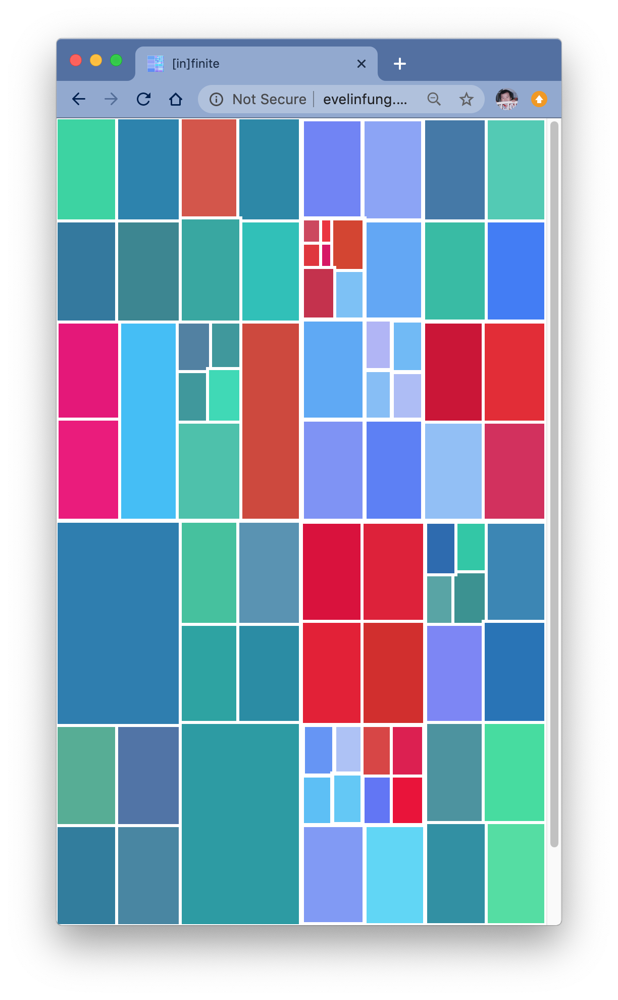
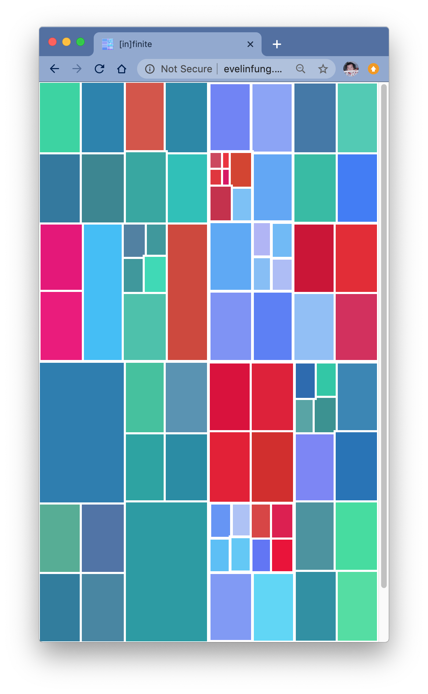
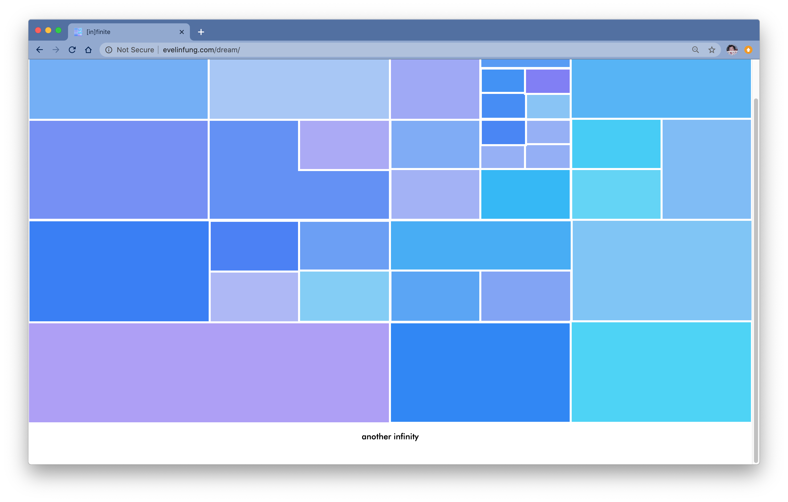

This project was created for ‘Studio: Interaction’ course taken by in 2018. This class focused in creating interactive concepts and techniques for websites. This project’s goal was to create a space that reflects a dream or a dreamy space. This site creates an immersive and expressive platform where the user is able to ‘get lost’ in an infinity of squares.

 


In Manhattan one is surrounded by endless amounts of grids: the street system, the window structure at The MET and the lines created throughout the Brooklyn Bridge. “Dream” grasps that grid concept alongside mathematical grids and patterns (eg. Fibonacci Sequence) through a clickable / tappable interfaces that encourages the user to continue displaying an endless amount of squares. The user can continue to create an infinity amount of compositions and combinations. Through a bright and pastel colour palette, “Dream” hopes to create delightfulness and an escape for the user. This site was created using HTML, CSS & Jquery.
